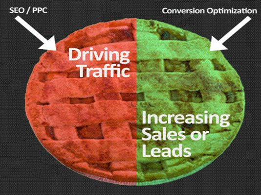

Do you wonder how a Conversion Rate Optimization can boost the three most important factors of commercial enhancement on the Internet? Yes, this is the most frequently asked question as online commercialization is a new trend in this modern era. CRO can enhance the advertisement options on the internet, along with Search Engine Operation and monetary investment of paid searches. We all know how customer engagement is an important factor in business development. To increase the customer count on different websites, CRO plays the most important factor in web analytics.
CRO is a remarkable arena that serves almost 95 percent of visibility gaining performances, and it hits the peak of any graph related to the most updated statistical analysis published by the Wall Street Journal. Now let us see the impact of CRO as a powerful booster in enhancing the credibility of commercial advertisement, Search Engine operation, and paid searches.
Factors that act as a power booster by CRO
Are you looking forward to how CRO can enhance the credibility factor of Social ads, SEO, and paid searches? Yes, then we are on the right track. Apart from promoting your firm by attracting your targeted audiences, it is worthwhile to use a CRO system to promote your product.
You should be well efficient with your outcomes and produce an open platform that will help you to gain a good range of profit margin along with a great number of people visiting your site.
CRO is a beneficial factor for Social advertisement genres
According to the latest average conversion rate, it has been witnessed by Commercial business analytics that Facebook has gained a 9.21% advertisement by utilizing CRO as a basic platform.
You should know that CRO clears the barrier between the customers and the business-oriented firm. Advertisement is the way through which you can show the benefits of your product.
So it should be much more transparent to all the customers to know the product well and precisely.
So how do CRO acts as a powerful booster in a commercial and social advertisement?
If you are promoting a product, you should look out for accurate statistical analysis and a precise forecast of demand. You will get a clean cut result by knowing the eagerness of your customers after launching the product on your website.
- CRO is an advantage that allows you to know the opportunity of getting a better result by obtaining a CRO results testing method.
- If we consider that conversion of your page from any location can make you earn 2 leads per thirty days running for two consecutive sessions (60 days). This may look a little awkward, but an additional benefit of 26 leads per year and if you are smart enough by closing those leads in between 9 to 10 percent.
- You will certainly witness that customers are investing an amount, which turns out to be $16,000. This is an outstanding way to boost advertisement on social media.
So how can CRO assist your SEO?
If you want to present your firm or corporation a unique and exceptional firm as compared to others, then it is worthwhile to say that CRO acts as a gem for analysis of your product details.
Suppose, for example, if you want your product to be top on Google ranking factor, then it is important for you to use CRO. So how will CRO execute in boosting SEO? Let us see:
- CRO helps SEO in improving the time required for visitors to enter your page by indicating the increment of the bounce rate.
- CRO detects the factor which leads to doing increment of bounce rate, and it will give you some clear data that is acting as a negative factor in increasing the bounce rate.
- Your main aim is to reduce the bounce rate factor by using SEO and top the Google rating.
Apart from playing an important role in controlling the level of bounce rate, CRO is also helpful in increasing the rate of conversion. This rate conversion factor acts as a catalyst in increasing the following matters:
- Increase in social media pursuit.
- Online overall popularity.
- Increasing your search engine ranking.
It is better to say that CRO is directly proportional to perform better. The more you do tests and make certain necessary changes, it allows you to get good outcomes.
So what kinds of favorable results do CRO provides to its users?
Based on the statistical analysis, we have done a detailed survey on the rate of success that CRO provides to all the 3 factors like SEO, Paid Search, and Social advertisement.
- Increment of traffic on the website by 95%: While we’re engaged in knowing about how CRO increases the rate of traffic by 95%, we have seen a website turning out to be much more profitable from their past condition by using CRO. “WebFx” is a digital marketing result analysis website, that states that CRO has increased the overall visitors count by 87%, customer feedback has increased by 129% along with a conversion rate of 40%.
- Enhancement of rate of conversion by 37%: Coming to the point of “E-connect corporate intranet connectivity,” which has taken a remarkable hike in recent past; CRO acts as a power generator is transforming e-commerce digitalization to the most updated platform to
- Increasing of generated leads by 60%: CRO helps to generate more leads as it increases the digital trafficking in any website. To be fairly honest leads are strategically converted traffic that allows the sales team to operate with much ease.

CRO acting as a catalyst in enhancing paid searches?
In a very simple manner, let us make you understand that what is a paid search and how CRO can enhance its credibility?
You must know that it is very easy to attract customers who are well known about your product as compared to people who are your new customers. New customers are unknown to deal with as you need time to engage yourself with them and know their demand.
CRO plays a very important role in this regard. It helps to boost the product by retargeting the visitors of that website and buyers.
Yes, there is an easy way that can reduce this balance between new and old customers buy fixing up the Cost per Acquisition (CPAs) rate and Return on Advertising Spend (ROAS).
All you need to do is to focus on decreasing the CPA and increasing the ROAS. So, you should mainly focus on Paid search as it very crucial for your abilities to attract your targeted customers.
Advantage of using CRO on the Paid search return
Let us shortly see the advantage of using CRO on Paid search return:
- Page Loading Time: CRO helps in reducing page loading time. While logging in your web page, if a customer finds that the page is taking too long to open, then that site becomes a “Junk.” This, in turn, will affect your conversion rate. So you need to minimize page loading time as much as possible by using CRO.
- Paid traffic for best landing pages by using CRO: CRO is the best way of achieving the most traffic landing pages. You should be thinking about how? The answer that will clear all your dilemma is produced below:
- CRO will help you to acknowledge the entire road map starting from the first click on the advertisement to surfing it briefly. This enhances the quality of that particular website.
- If you think that how to create a new landing page? Let me tell you that you do not need to create a new landing page; you can choose the best one from the existing pages and allow yourself to link it to the paid traffic.
- So in the third case, you must have a question of how will you select the best page from your trash? The best page can be selected based on the number of visitors that paid for that page. The more you see, the visitor’s count on a certain page acknowledges it as the best one.
So now, we think that you have acquired a well-known knowledge in this field of digital commercialization. We have informed you about the ways CRO can enhance as a boosting power for Paid services, Social advertisements, and SEO. So look forward to using CRO as a power-boosting factor to upgrade your E-commerce websites.
About the author
Haifa is a growth assistant at AirTract.Com, a go-to place for all expert advice wherein people ask questions, write articles, publish and learn from paid and free online courses.
She is a communication engineering graduate but a digital marketing buff who is fascinated by the best SEO practices and content strategies. She loves to make friends and explore places, and she chooses reading in her time off
References
- https://www.searchenginewatch.com/2018/04/23/how-to-use-cro-as-a-power-boost-for-paid-search-social-ads-and-seo/
- https://www.omniconvert.com/blog/six-tips-cro-power-boost-social-ads-seo.html
- https://www.disruptiveadvertising.com/conversion-rate-optimization/cro-and-seo/
- https://www.click.co.uk/resource-types/whitepapers-ebooks/
- https://clutch.co/agencies/ppc
- https://seo.co/conversion-rate-optimization/
- https://semrushconf.in/agenda-2019/
Leave a Reply